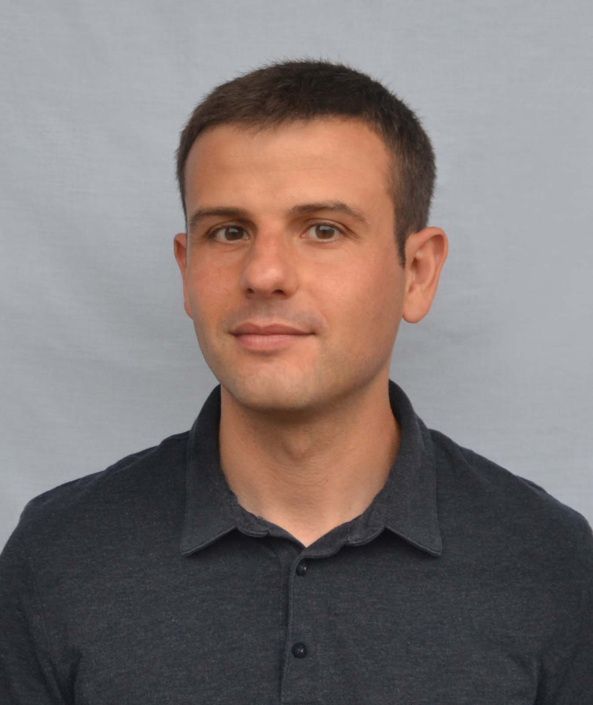

About me
I am a Professor with a Personal Chair in Statistics and Data Science at the School of Mathematics, University of Edinburgh.
I received the degree in Telecommunication Engineering, the M.Sc. degree in Communication Technologies, and the Ph.D. in Electrical Engineering from University of Cantabria.
Research interests
My research interests are in statistical signal processing and computational statistics. My work covers diverse topics in these areas, including Monte Carlo methods, Bayesian inference in static and dynamical models, signal processing for biomedical applications, and wireless communications. Most of my recent (and ongoing!) work is in importance sampling methodology, e.g. multiple importance sampling, adaptive importance sampling, or sequential Monte Carlo (particle filtering).
Awards and recognitions
 |
 |
 |
 |
 |
Other responsibilties
Editorial duties
- Associate Editor of the IEEE Transactions on Signal Processing (2020-).
- Guest Editor of a special issue in Foundations of Data Science on Sequential Monte Carlo Methods (2021-2022).
- Guest Editor of a special issue in EURASIP Journal on Advances in Signal Processing on Monte Carlo methods (2017-2018).
Committees
- Elected member of the Signal Processing Theory and Methods Technical Committee at the IEEE Signal Processing Society, (2020-).
- Elected member of the Theoretical and Methodological Trends in Signal Processing Technical Area Committee at the European Association for Signal Processing (EURASIP), (2019-).